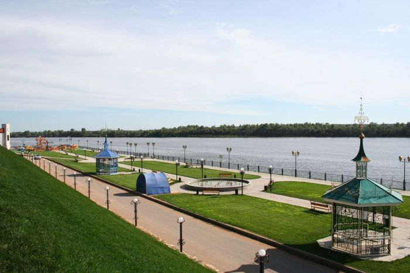

Мамады́ш (тат. Мамадыш) — город в Республике Татарстан, административный центр Мамадышского района. Расположен на реке Вятке (правый приток Камы), в 167 км к востоку от Казани. Один из древнейших населённых пунктов Татарстана, известный с 1391 года как татарское селение, получившее статус города в 1781 году по указу Екатерины II. Входит в число исторических городов России. Известен своими медоносными угодьями, а также как родина выдающегося татарского поэта Гаяза Исхаки. Сегодня Мамадыш — важный промышленный и культурный центр северо-востока Татарстана.